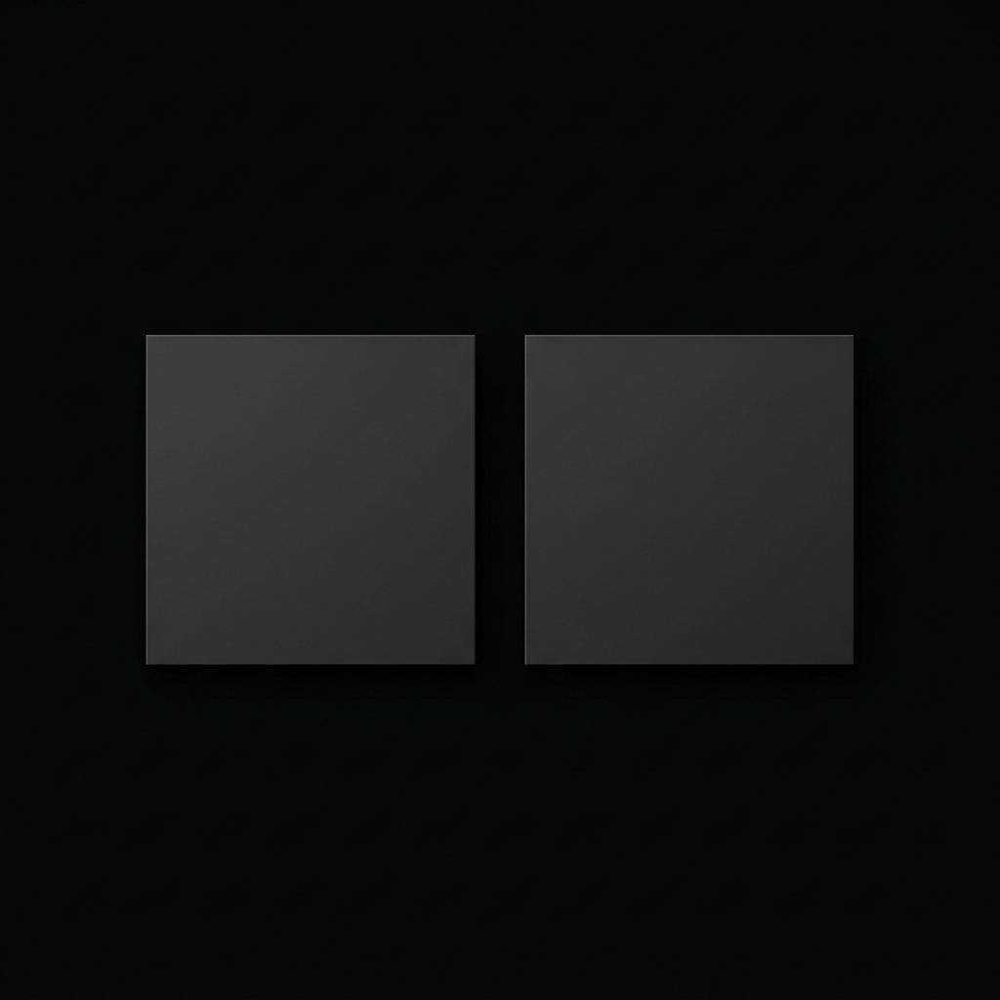
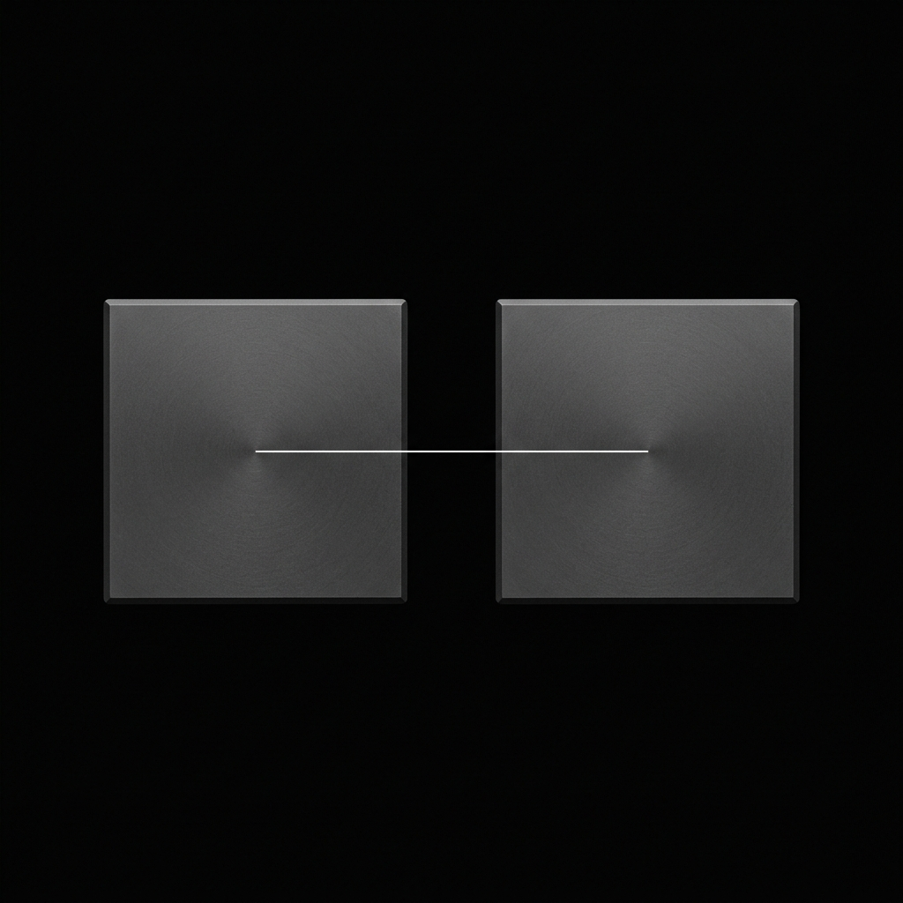

Zero-Impact Isolation
Claudeデスクトップアプリの
Claudeデスクトップアプリの環境を分離する。
既存の優れたCLIプロファイル管理ツールに加え、デスクトップアプリが依存するApplication SupportとKeychainも独立させ、両者の環境を完全に連動させるユーティリティです。

独立したデータ領域
Application Supportディレクトリの参照先とKeychainをプロファイルごとに分離。OSレベルの大がかりな仮想化を行わず、軽量かつ確実にデータを隔離し、アカウントごとの環境を構築します。

環境変数の保護
システムの環境変数をグローバルで変更したり、既存の設定を上書きすることはありません。すべてはサンドボックス化された専用パスで安全に実行されます。
選択的な同期
会話履歴は隔離しつつも、CLAUDE.mdのグローバルルールやインストール済みのプラグインなど、共通化したい設定だけをプロファイル間で同期することが可能です。

無駄のないワークフロー
複雑な初期設定は不要です。すべてメニューバーから直感的に操作できます。
01
インストール＆起動
アプリケーションフォルダに入れて起動するだけ。メニューバーに常駐します。
02
コンテキストの作成
ワンクリックで「業務」「研究」など、完全に独立したプロファイルを作成できます。
03
分離環境での起動
プロファイルを選択すると、Claudeデスクトップアプリが隔離された専用ディレクトリを参照して起動します。
導入と活用
既存の環境を破壊することなく、完全に隔離されたプロファイルを構築します。
初期セットアップ
アプリケーションフォルダに配置して起動するだけ。既存の環境変数は一切書き換わらず、安全に共存します。
プロファイル作成
用途に合わせた独立環境を作成。完全隔離（デフォルト）か、設定のみを共有する構成を選択できます。
ターミナル連携
ターミナルで eval $(csw env) を実行するだけで、Claude Codeも同じ隔離コンテキストで即座に動作を開始します。